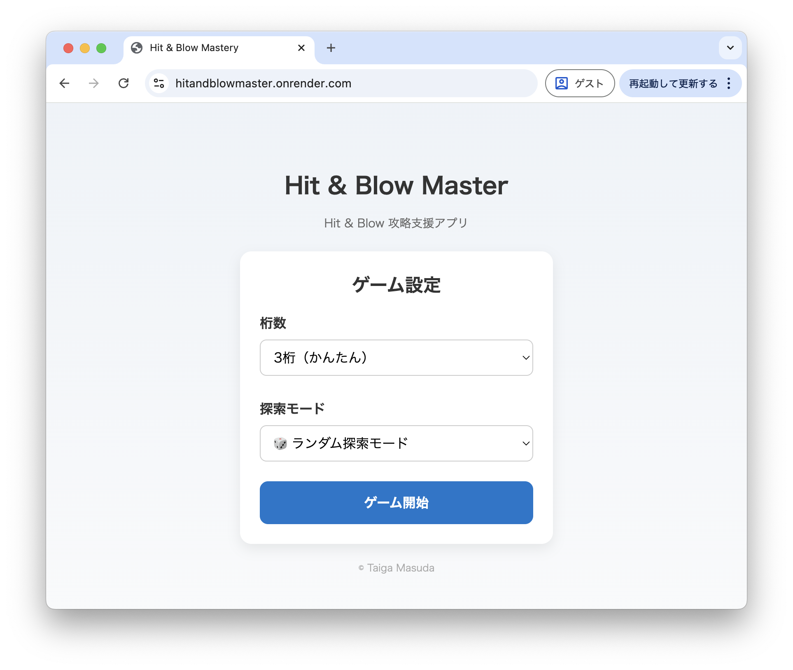
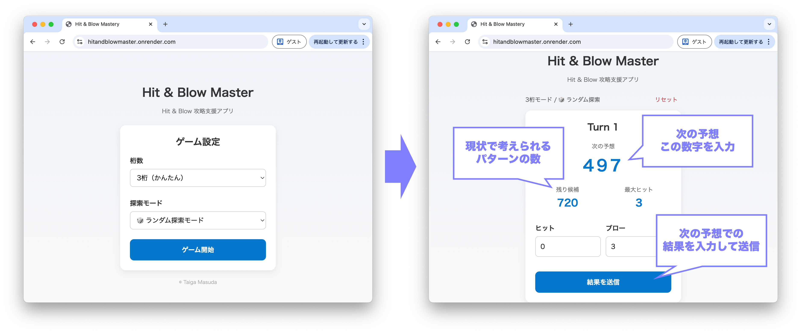

Hit & Blow Master
Hit & Blow（数当てゲーム）を効率的に攻略するためのWebアプリケーションです。
これまでの入力履歴とフィードバックをもとに、次に試すべき数字候補を提示します。
背景
Hit & Blow は、数字の組み合わせを当てるゲームで、各試行ごとに「Hit（正しい数字が正しい位置にある）」と
「Blow（正しい数字が間違った位置にある）」の情報が与えられます。
効率的に解を見つけるには、これらの情報を活用して探索空間を絞り込む必要があります。
4桁の数字の場合、全組み合わせは5040通りありますが、頭を使わなければ中々解にたどり着けません。
そこで、数字を入力するたびに、次に試すべき候補を提示するアプリを作成しようと思いました！
作品の詳細
本作品では、Hit & Blow の探索空間を効率的に絞り込むアルゴリズムを実装しました。 毎回の入力結果（Hit / Blow）を制約条件として管理し、候補集合を更新しています。

使用技術
- Python
- Flask
- HTML / CSS
- 探索アルゴリズム（全探索・絞り込み）